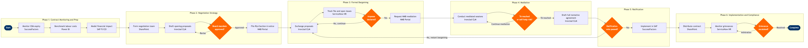

Labour Relations & Union Negotiation
Corporate Support Functions › Human Resources · 17 L4 steps · 6 phases · 5 decision gates · Updated 2026-03-19 22:18
📊
Process Flow Diagram (BPMN)

📋
L4 Process Steps
| Step | Step Name | Role / Swim Lane | System | Input | Output | KPI | Dec? | Exc? |
|---|---|---|---|---|---|---|---|---|
Phase 1 1.1 |
Monitor CBA amendable date and trigger opening | Director, Labour Relations | SAP SuccessFactors | Current CBA contract dates, calendar alert at 180-day threshold | Opening trigger memo; formal Section 6 notice preparation initiated | Opening notice filed ≥180 days before CBA amendable date; 100% of contracts tracked in SuccessFactors | N | N |
| 1.2 | Benchmark labour costs against peer carriers | Labour Economist / Compensation Analyst | Power BI | Current pay scales from SAP SuccessFactors; DOT Form 41 peer carrier filings; IATA airline cost data | Labour cost benchmarking report (cost gap vs. Delta, United, American, Southwest) | Data currency ≤90 days old; peer set covers ≥5 major carriers; report delivered ≥150 days before amendable date | N | N |
| 1.3 | Model financial impact of proposed contract changes | VP Finance / Labour Cost Modeller | SAP S/4HANA FI/CO | Benchmarking report; current headcount, pay grades, and FTE data from SAP SuccessFactors | Financial impact model with ≥5 pay scenarios, NPV over contract term, and cost-per-ASM sensitivity analysis | Model covers ≥5 scenarios; labour cost projection accuracy within ±2% of actuals at year-end; model delivered 120 days before amendable date | N | Y |
Phase 2 2.1 |
Form cross-functional management negotiating team | Chief People Officer / VP Labour Relations | Microsoft SharePoint | Board/CEO negotiation parameters; legal counsel engagement; financial model from Step 1.3 | Negotiation team charter; defined mandate authority limits; war-room SharePoint site stood up | Team constituted ≥120 days before target opening session; team includes Legal, Finance, Operations, and HR representation | N | N |
| 2.2 | Develop management opening proposals and costing | Labour Relations Manager | Ironclad CLM | Benchmarking report; financial model; operational requirements from Flight Operations and Crew Planning | Management opening proposal document with article-by-article positions; cost envelope per article | Proposal reviewed by outside labour counsel within 10 business days; FAR Part 117 and ICAO fatigue regulation compliance verified for all scheduling provisions | N | N |
| 2.3 | Obtain board approval of negotiation mandate | CEO / Board of Directors | SAP S/4HANA FI/CO | Draft opening proposal; financial model with cost ceiling; outside counsel legal review sign-off | Board-approved negotiation mandate with cost ceiling and fall-back positions | Mandate approved before first bargaining session; cost ceiling grounded in verified FI/CO labour cost baseline | Y | N |
Phase 3 3.1 |
File Section 6 notice and open formal bargaining | VP Labour Relations / Union President | NMB Case Management Portal | Board-approved management proposal; union's Section 6 notice received | Bargaining docket opened in NMB portal; first session date confirmed; ground rules agreed | First bargaining session convened within 30 days of mutual Section 6 notice exchange | N | N |
| 3.2 | Conduct iterative proposal exchange and counter-proposals | Labour Relations Manager / Union Bargaining Committee | Ironclad CLM | Opening proposals from both parties; session minutes; ground rules agreement | Redlined contract drafts per session; session tracker; consolidated open items log | Open items log reduced by ≥10% per bargaining month; no previously agreed article reopened without written consent of both parties | N | Y |
| 3.3 | Track tentative agreements and maintain open issues log | Labour Relations Coordinator | ServiceNow HR | Session minutes; articles agreed (TA) and disputed articles from each bargaining session | TA log (articles agreed with effective dates); open issues register with union and management positions per article | TA log updated within 24 hours of each session; open issues register shared with both parties within 48 hours | N | N |
| 3.4 | Assess bargaining progress and declare impasse if warranted | VP Labour Relations | Power BI | Open issues register; session count; timeline vs. target; financial model thresholds | Impasse declaration to NMB, or continued bargaining directive with revised target milestones | ≥75% of articles TA'd before NMB referral; target contract duration ≤24 months from opening notice to ratification | Y | N |
Phase 4 4.1 |
Request NMB mediation and establish case docket | VP Labour Relations | NMB Case Management Portal | Impasse declaration; unresolved articles list with positions documented | NMB case docket opened; assigned mediator confirmed; first mediated session scheduled | NMB application filed within 5 business days of impasse declaration; first mediated session convened within 45 days of NMB acceptance | N | N |
| 4.2 | Conduct NMB-mediated bargaining and resolve open articles | VP Labour Relations / NMB Mediator / Union President | Ironclad CLM | NMB mediator briefing package; remaining open articles; financial parameters | Additional TAs on mediated articles; mediator recommendations; or NMB proffer of arbitration if impasse persists | Open articles reduced by ≥50% within 90 days of mediation start; full TA reached before proffer of arbitration where possible | Y | Y |
Phase 5 5.1 |
Draft and execute full tentative agreement | Labour Relations Manager / Legal Counsel / Union Bargaining Committee | Ironclad CLM | All TAs from bargaining and mediation sessions; mediator-brokered language; financial model final scenario | Fully executed tentative agreement document (all articles); implementation date schedule | Legal review completed within 15 business days; zero unresolved ambiguous provisions; implementation timeline agreed before union ratification vote | N | N |
| 5.2 | Conduct union membership ratification vote | Union President / Bargaining Committee | ElectionBuddy | Signed TA; union member roster from SAP SuccessFactors; voting eligibility rules | Ratification vote result (pass/fail with percentage); formal ratification notice to management | Voter turnout ≥60%; ratification threshold >50% of votes cast per union bylaws; result certified within 5 business days of vote close | Y | Y |
Phase 6 6.1 |
Implement ratified agreement in HR and payroll systems | HR Systems Manager / Payroll Manager | SAP SuccessFactors | Ratified agreement with effective dates; retroactive pay calculation if amendable date predates ratification | Updated pay scales, work rules, and benefits configurations in SuccessFactors; payroll cutover completed; retro pay processed | All pay changes live within 30 days of ratification; retroactive pay (if applicable) paid within 60 days; payroll error rate <0.1% of affected employees | N | Y |
| 6.2 | Distribute contract and conduct manager training | Labour Relations Manager / HR Business Partners | Microsoft SharePoint | Final executed contract; implementation guidelines; manager briefing deck | Contract published to employee self-service portal; manager training completion records in SAP SuccessFactors LMS | Contract accessible to 100% of covered employees within 14 days of ratification; ≥90% of frontline managers trained within 30 days; training completion tracked in SuccessFactors LMS | N | N |
| 6.3 | Monitor grievance filings and manage compliance | Labour Relations Coordinator / HR Business Partners | ServiceNow HR | Employee or union grievance filings; relevant contract provisions; prior arbitration precedents | Grievance case log; Step 1/2/3 resolution decisions; arbitration referrals with legal brief | Step 1 grievance response within 10 business days; ≥70% of grievances resolved at Step 1 or 2 without arbitration; arbitration spend <$500K per year per contract group | Y | Y |
📋